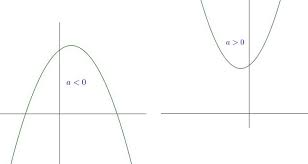
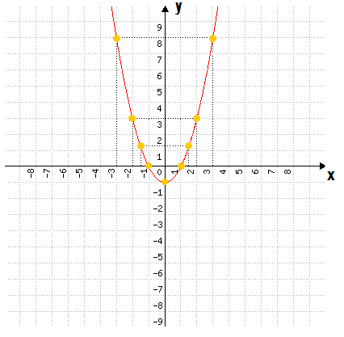

FUNÇÕES QUADRÁTICAS OU FUNÇÕES POLINOMIAIS DO SEGUNDO GRAU
Para contextualizar, nas funções de primeiro grau, temos a equivalência de dois conjuntos f(x)= a+b Para a colocação dessa equação no gráfico de retas, devemos encontrar os dois valores respectivamente no eixo x e y.
Na função polinomial do 2° grau, teremos basicamente a troca das equações matemáticas, por equações do segundo grau (as que contém os coeficientes: a, b e c) Detalhe importante é que para ser do segundo grau, o coeficiente a deve ser diferente de 0.
Os gráficos das funções quadráticas são parábolas, é o que define se sua concavidade será para cima ou para baixo, é o valor de a Se a>0 Concavidade para cima Se a menor que 0 Concavidade para baixo.

Para inserir no gráfico as funções, falando do vértice Na função do primeiro grau, precisamos de apenas 2 pontos, Na polinomial fica mais complicado, para aplicarmos ela seria necessário analisar a concavidade, calcular as raízes, o vértice e determinar os pontos de interseção do ponto y. Para calcular o vértice podemos usar uma fórmula.
E para descobrir as raízes é necessário usar a fórmula de bhaskara, ou se se a equação é incompleta pode utilizar outros métodos.
Acreditava ser um conteúdo fácil, por ter "função" no nome, mas botando a mão na massa percebi que deveria ter dado mais tempo e antenção estudando essa parte. Não consegui realizar todas as questões do trabalho... Também foi apresentado na aula o software "geogebra", gosto muito quando a gente pode realizar as atividades com uma outra plataforma. Pra fazer a questão prática com o geogebra eu procurei alguns vídeos no YouTube pra me ajudar a entender melhor como o programa funcionava.

Achei bem diferente esse conteúdo, queria mesmo saber onde se era utilizado esse tipo de função polinomial, e descobri que essa função que forma uma parábola, pode ser utilizada na física para descrever a trajetória de um objeto no espaço (em uma situação específica de baixa resistência do ar). Basicamente em queda livre O espaço percorrido e dado em função do tempo, podendo sim formar uma função quadrática s(t) = 4,9 s= espaço t= tempo 4,9 corresponde a constante, que seria metade da gravidade que é 9,8 m/s²